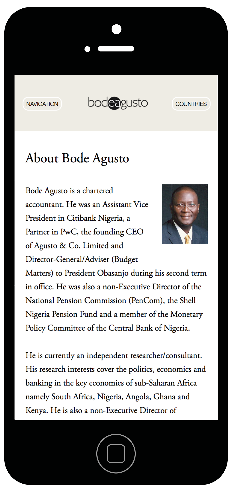
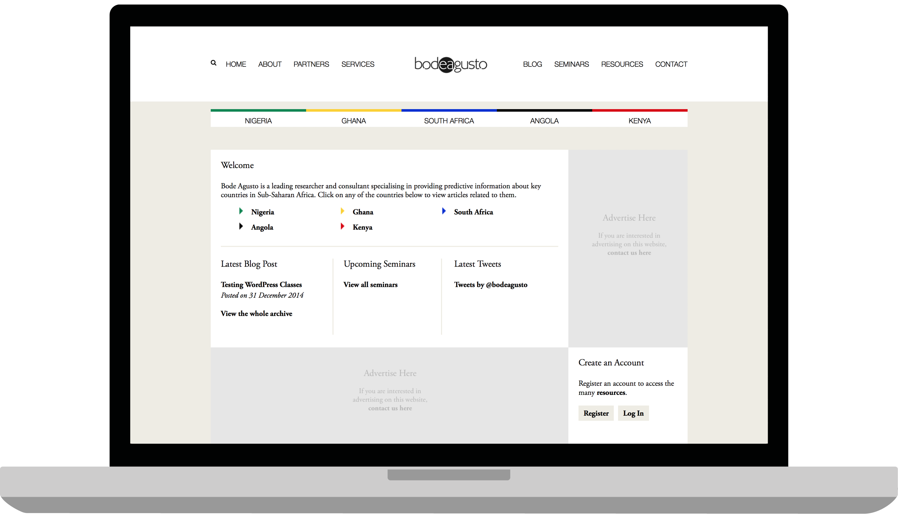
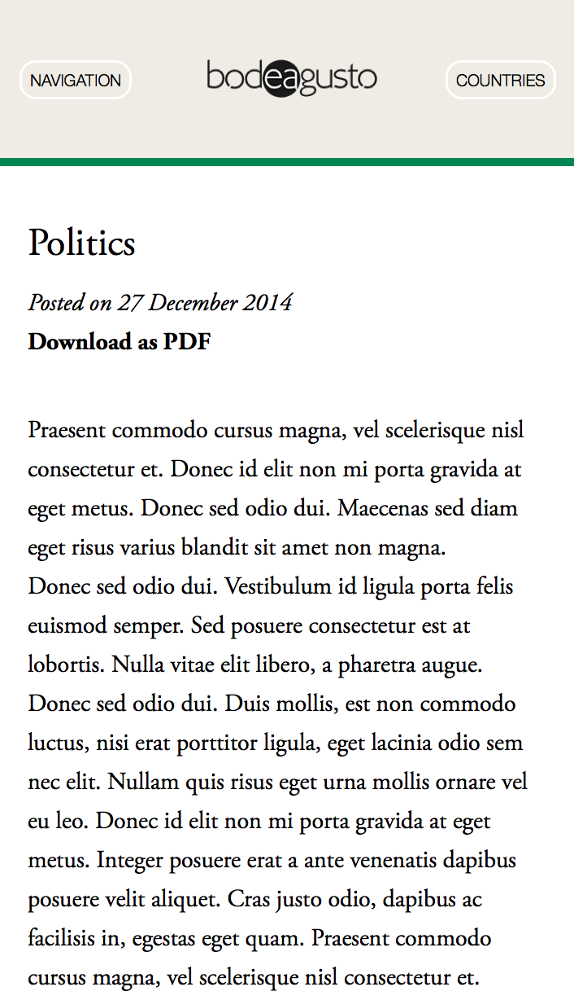
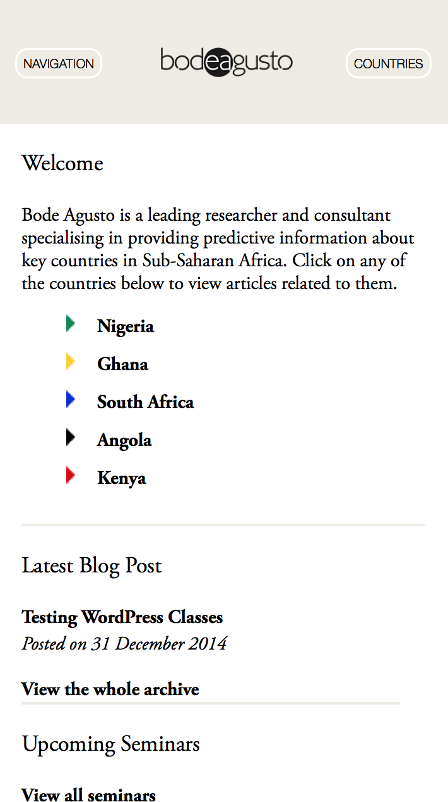
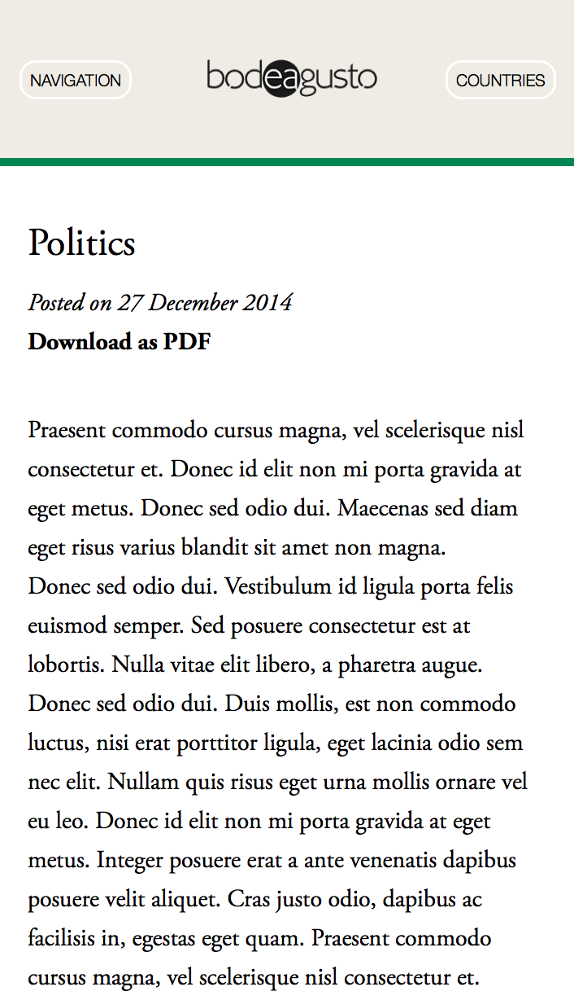
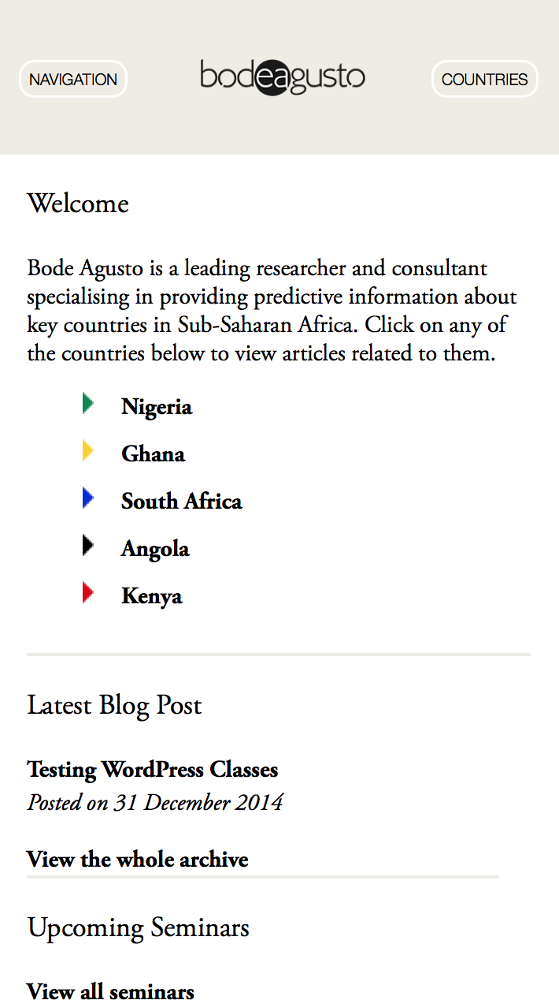

Bode Agusto is a chartered accountant. He was an Assistant Vice President in Citibank Nigeria, a Partner in PwC, the founding CEO of Agusto & Co. Limited and Director-General/Adviser (Budget Matters) to President Obasanjo during his second term in office.
Although finished development, the website has not been officially launched yet by the owner.
 


